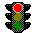

Par défaut, le bas de l'image est aligné avec le début du texte. Si le texte comporte plusieurs lignes de texte, la deuxième et les suivantes sont placées sous l'image.
Par défaut, le bas de l'image est aligné avec le début du texte. Si le texte comporte plusieurs lignes de texte, la deuxième et les suivantes sont placées sous l'image. Par défaut, le bas de l'image est aligné avec le début du texte. Si le texte comporte plusieurs lignes de texte, la deuxième et les suivantes sont placées sous l'image.
Le milieu de l'image est aligné avec le début du texte. Si le texte comporte plusieurs lignes de texte, la deuxième et les suivantes sont placées sous l'image.
 Le haut de l'image est aligné avec le début du texte. Si le texte comporte plusieurs lignes de texte, la deuxième et les suivantes sont placées sous l'image.
L'image est alignée à gauche et en même temps le texte s'aligne en haut. Si le texte comporte plusieurs lignes de texte, l'ensemble se place comme un paragraphe à la droite de l'image.
L'image est alignée à droite et en même temps le texte s'aligne en haut. Si le texte comporte plusieurs lignes de texte, l'ensemble se place comme un paragraphe complet à gauche de l'image.
Il est possible de placer un bloc de texte entre deux images ; l'une placée à gauche et l'autre alignée à droite.